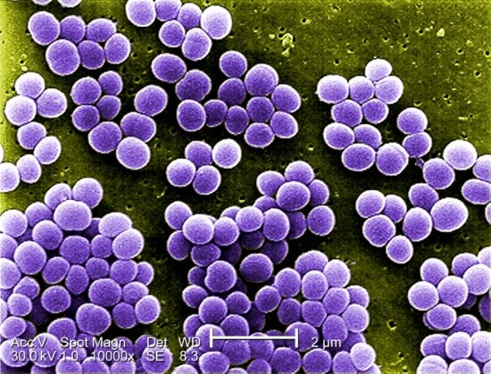
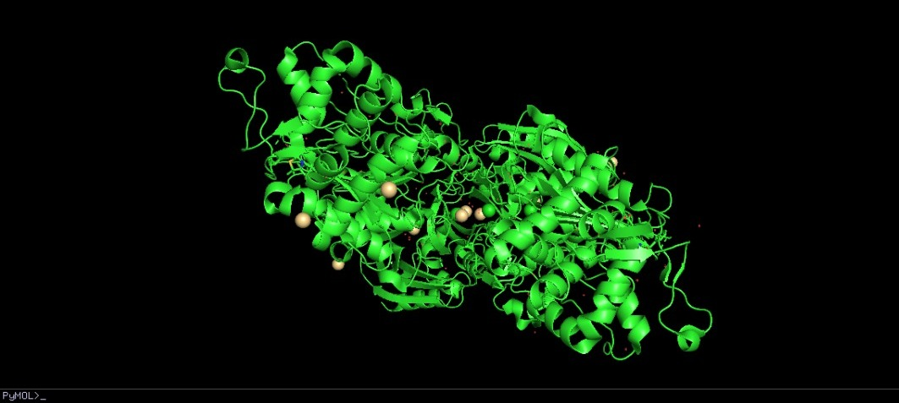
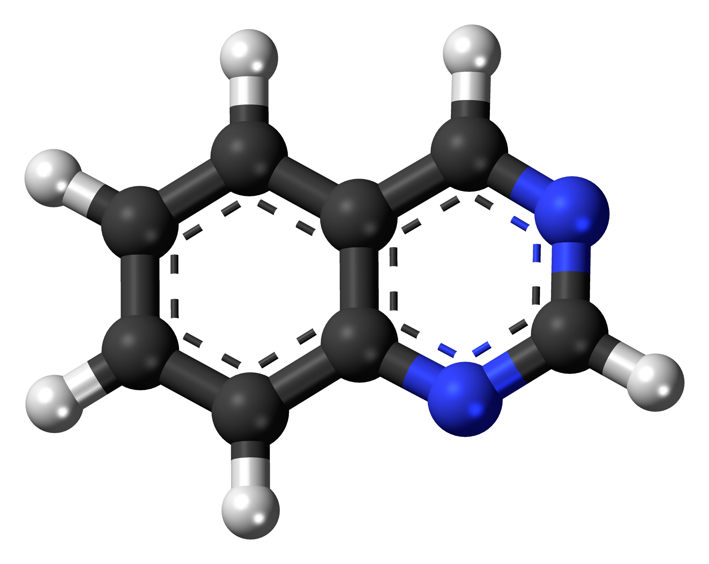

NUESTRO PROYECTO
complemento contra resistencia bacteriana a la meticilina
Introducción
La penicilina es un medicamento antibiótico que, a lo largo de los años, ha tenido variantes enfocadas en el tratamiento de infecciones con diferentes grados de severidad. Este fármaco pertenece a los betalactámicos, junto a las cefalosporinas. Pero en particular, la meticilina es una variante de amplio espectro de la penicilina biosintetizada, su síntesis es totalmente a partir de las reacciones químicas.
Nuestras actividades
- identificación de las proteínas
- búsqueda de moléculas inhibidoras de las proteínas
- modelado y docking de la proteína a una molécula de penicilina
- planteamiento de uso

Problemática
Medicamentos que son usados comúnmente como la penicilina comienzan a perder efecto terapéutico una vez que el cuerpo y el blanco se “acostumbran” a él.
Existen muchas bacterias a las cuales la penicilina puede ayudar en la eliminación de estas y de sus síntomas. La staphylococus aureus es una bacteria que inicialmente se podía tratar con meticilina, variante de la penicilina, pero que en el desarrollo y evolución de la bacteria ha ido desarrollando resistencia a este fármaco. La penicilina PBP2a es la proteína que defiende a la bacteria del efecto de la meticilina.
El staphylococus aureus si bien, en la mayoría de los pacientes tendrá manifestaciones como un resfriado o infecciones cutáneas, cuando este no es tratado de forma eficiente desde los primeros momentos, existe una probabilidad de que la bacteria viaje por el torrente sanguíneo y se propague al corazón, los huesos o los pulmones, con enfermedades como la endocarditis, la osteomielitis o infecciones pulmonares como bronquitis o neumonía.
Sobre la PBP2a
la proteína b-defensina humana tipo 2 es un gran aliado contra bacterias como el staphylococcus aureussi bien, esta bacteria representa un daño mínimo en personas generalmente sanas, cuando una infeccion como un resfriado o una infección cutánea tiene un empeoramiento durante cierta cantidad de tiempo, es normal que la bacteria se transfiera al torrente sanguíneo, este puede conducir a la endocarditis, osteomelitis o infecciones pulmonares. El riesgo a contraer estas enfermedades es aún mayor considerando la resistencia a los antibióticos de primera línea.

¿Cómo funciona?
esquema del funciónamiento del inhibidor Quinazolinona Alostérica como inhibidor de la expresión enzimática del PBP2a
Sobre el docking de PBP2a con inhibidor Quinazolinona Alostérica.
El docking corresponde a un proceso por el cual una proteína o una enzima se asocia a otra, para esto, una molécula funciona como el puerto mientras que se incrusta al puerto. Este procedimiento permite la selectividad de agrupación entre enzimas.
Dado que el PBP2a es una enzima, una forma de contrarrestar o bloquear su acción es mediante inhibidores. Estos inhibidores se conectan con la enzima y limitan total o parcialemente el efecto que tuviesen.
Existen muchos mecanismos de inhibición, por ejemplo, algunos limitan la obtención de sustratos por parte de la enzima, y por lo tanto, no tienen materia para catabolizar. Otros, no bloquean la obtención de sustratos ni tampoco bloquean las sustancias catalizadas, en su lugar, interceptan las sustancias antes de que lleguen al lugar donde pudiesen tener efecto. A estos se les llaman procesos de inhibición competitivos y no competitivos.
El uso de inhibidores para una enzima como la PBP2a es una opción que permita, como complemento, mejorar la efectividad de la meticilina. En este sentido, se plantea el uso de un inhibidor de la PBP2a para, a su vez, inhibir la resistencia del S. Aureus a la meticilina.

Planteamiento
Se propone emplear el inhibidor Quinazolinona alostérica como inhibidor de la expresión de la enzima.
Luego de su aplicación, se debe proceder con los tratamientos de meticilina, solo que esta vez, no debería presentarse resistencia a sus efectos.
Se utiliza pyMol para la representación gráfica de las enzimas y moléculas y para la simulación del docking AutoDockTools. Si la compatibilidad de la enzima PBP2a con el inhibidor quinazolinona es afirmativo, entonces se confirma que este inhibidor es viable para su uso como complemento terapéutico.
procedimiento
Con base en las investigaciones realizadas, se procede al docking entre la enzima PBP2a y la quinazolinona alostérica mediante AutodockTools. Este procedimiento, a la vez que corresponde a un proceso de modelado de la enzima y el complemento, corresponde también a la parte de simulación in silico en cuanto a la compatibilidad de las moléculas.
resultados
luego del renderizado de la asociación entre la enzima y el inhibidor, se concluye que no es viable su unión puesto que la enzima no supone ningún espacio de acoplamiento con el inhibidor ni tampoco supone la compatibilidad con inhibidores competitivos, por ende, el tratamiento complementario a la meticilina mediante el uso de la quinazolinona alostérica no supone una ventaja terapéutica.
discusión
el tratamiento a la resistencia de antibióticos por parte de las bacterias puede ser el primer paso hacia el combate de infecciones bacterianas. En la medida de lo posible, deshabilitar el patógeno a través de mecanismos internos supone una ventaja, pues de esta manera, la bacteria se dearrollará sin genes o expresiones en defensa de los antibióticos.